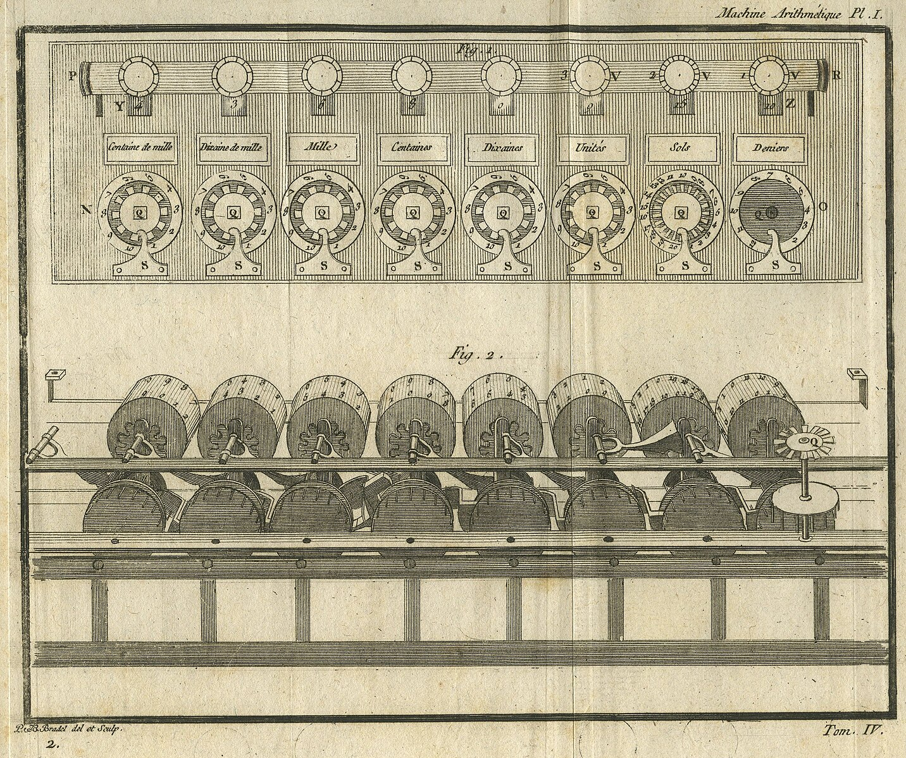

From Oeuvres de Blaise Pascal, Pascaline (1779)
Course Outline and Lectures:
The following is a tentative outline for the lectures for the course:
| Date | Module | Lecture | Description | Reading |
|---|---|---|---|---|
| Jan 19 | 1 | 1 | Deterministic Finite State Automata | Kozen (Lec. 1-4) |
| Jan 21 | 2 | Non-deterministic Finite State Automata | Kozen (Lec. 5-6), Hopcroft-Ullman (Ch. 2.3) | |
| Jan 28 | 3 | Regular Operations and Closure Properties | ||
| Feb 2 | 4 | The Myhill-Nerode Characterization | ||
| Feb 4 | 5 | Kleene Theorem | ||
| Feb 9 | 6 | Weighted Automata | ||
| Feb 16 | 2 | 7 | Push-down Automata | |
| TBD | 8 | The Chomsky Hierarchy and Generative Grammars | ||
| TBD | 9 | Deterministic Turing Machines | ||
| TBD | 10 | Nondeterministic and Multi-Tape Turing Machines | ||
| TBD | 11 | Lambda Calculus and the Church-Turing Thesis | ||
| TBD | 3 | 12 | Decidable Problems | |
| TBD | 13 | The Halting Problem and Limits of Computation | ||
| TBD | 14 | Rice's Theorem | ||
| TBD | 15 | More Undecidable Problems | ||
| TBD | 4 | 16 | Time Complexity | |
| TBD | 17 | NP-Completeness and Cook-Levine Theorem | ||
| TBD | 18 | Reducibilities Among Combinatorial Problems | ||
| TBD | 19 | Space Complexity and Savitch's Theorem | ||
| TBD | 20 | Hierarchy Theorems and the Complexity Zoo |